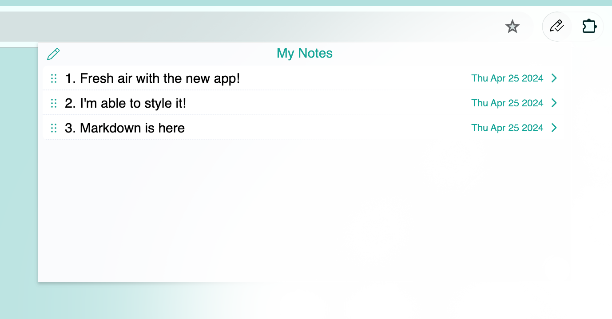
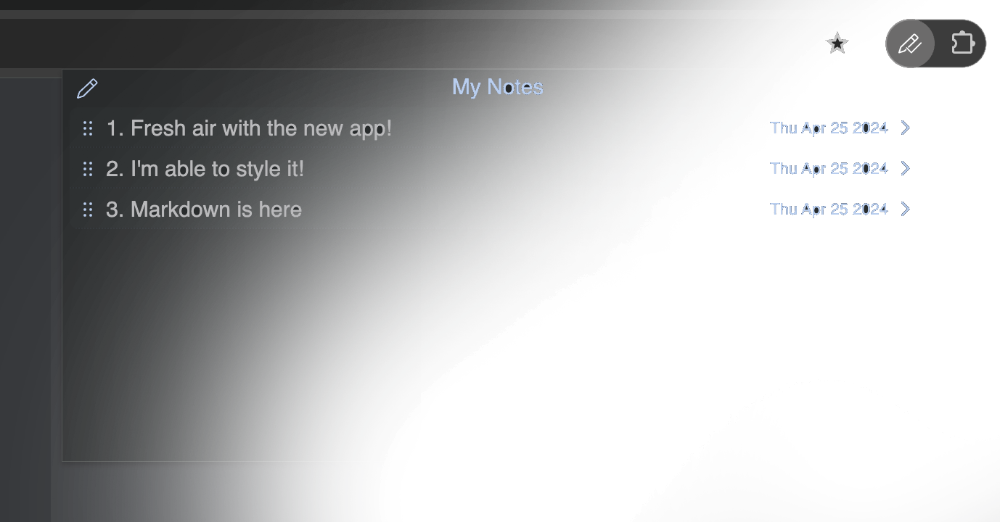
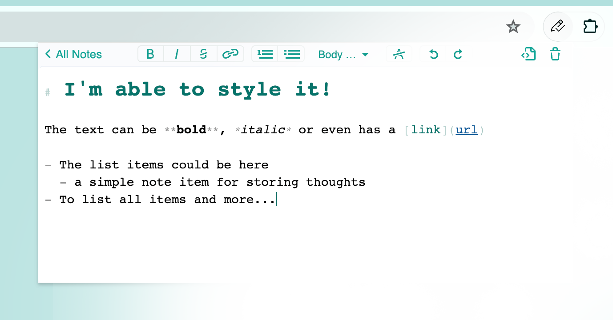
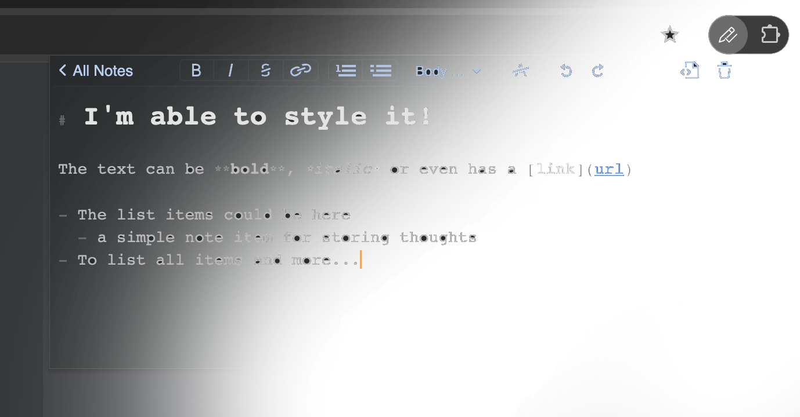
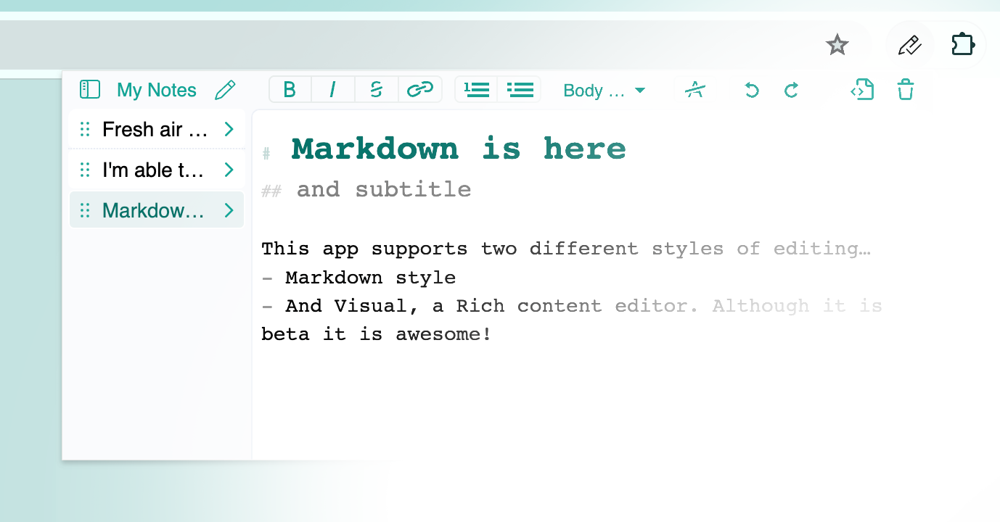
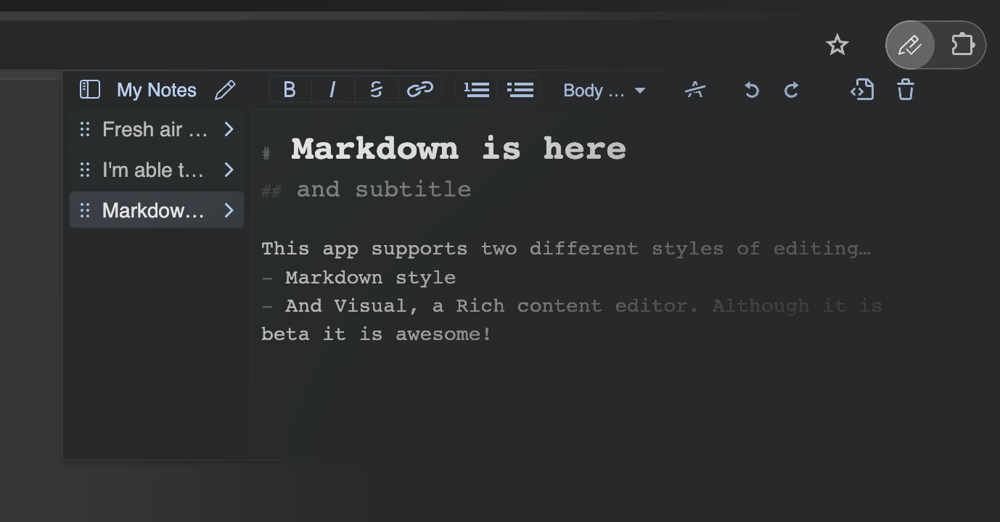
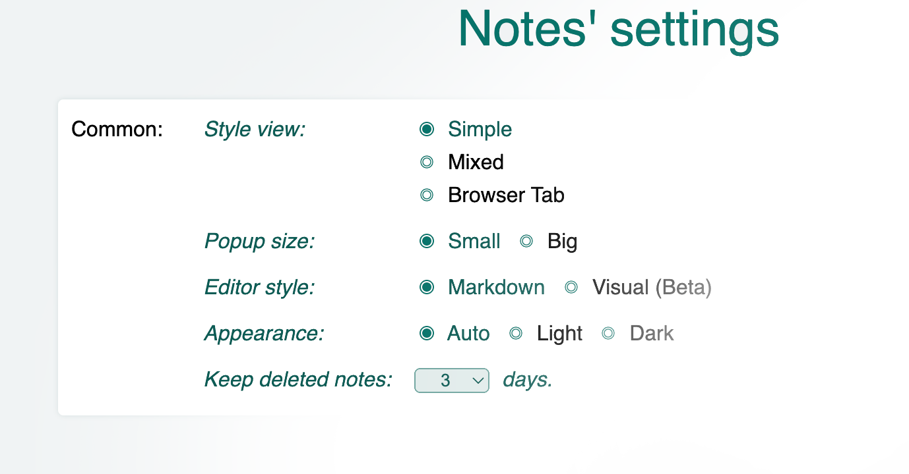
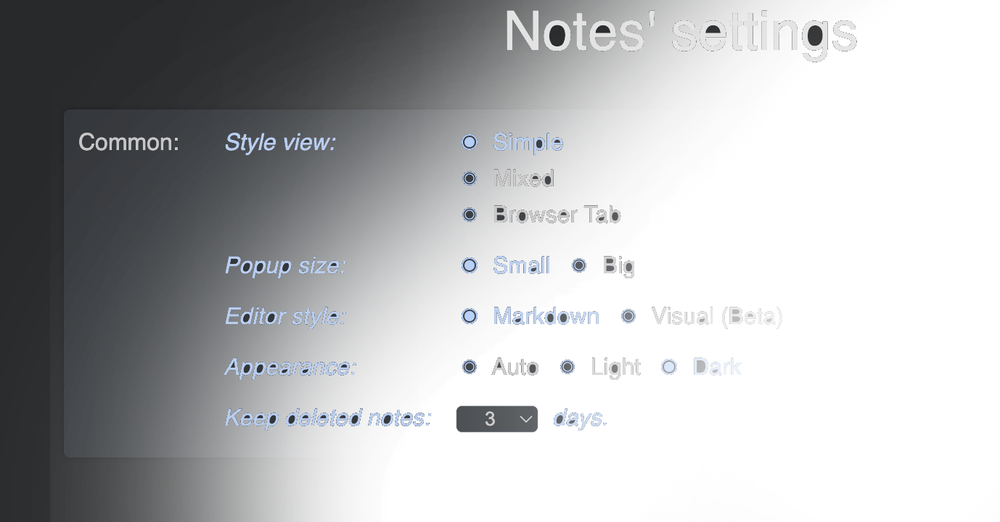
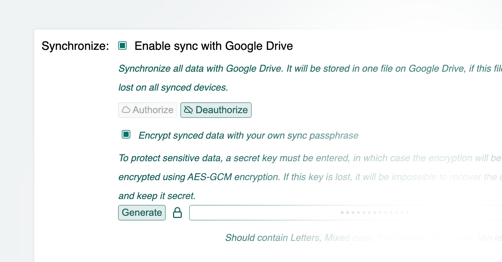
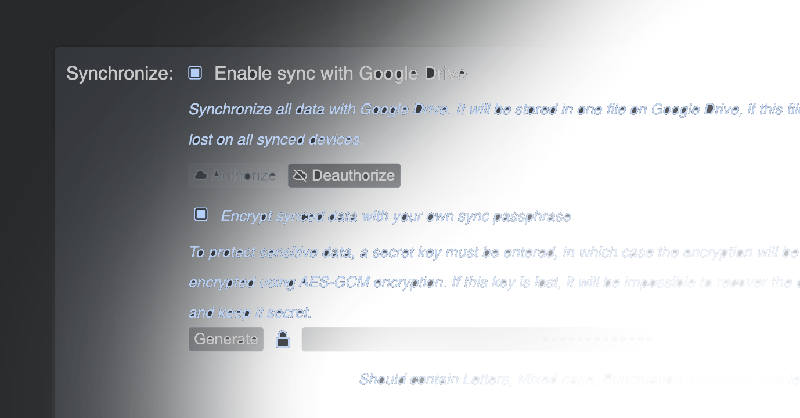

What's New in My Notes
Thank you for being with Work-Notes!
New name, My Notes!
Or it can be just said, Notes.
This extension is not only designed for a working time like before, it is intended to be your personal
fabulous notes app.


New notes with new looks!
The entire application was redesigned in a new way. Now, you can use two types of styling:
- Markdown it! A plain text format editor for writing structured documents. Based on the CodeMirror with markdown-it renderer followed the CommonMark spec.
- WYSIWYG-style editing. A Rich content editor ideally, produce clean, semantically meaningful documents while still being easy to understand. Based on the ProseMirror with the bridge the gap between editing explicit, unambiguous content like Markdown, and classical WYSIWYG editor.


Now it has the mixing mode!
The app can have a new 'Mixed' style where all notes items and editing documents are in the same view.
This view can be set on the settings page, see below...


The Settings page is here!
This app can now be configured from the Settings page.
There are several options to so:
- Common area contains settings for Popup styles, Markdown or Visual editor, windowed mode, and more...
- The Synchronize section allows to enable data sync between devices simultaneously, see below...


Make it sync to the cloud!
The app can sync notes between devices using the Google Drive cloud. No passwords are required here,
but it still asks to Authorize Google API using the
Google Sign-In
method. It is safe and secure. This section provides options to choose, synchronize notes, or not,
encrypt data when synchronizing, or leave it blank.

